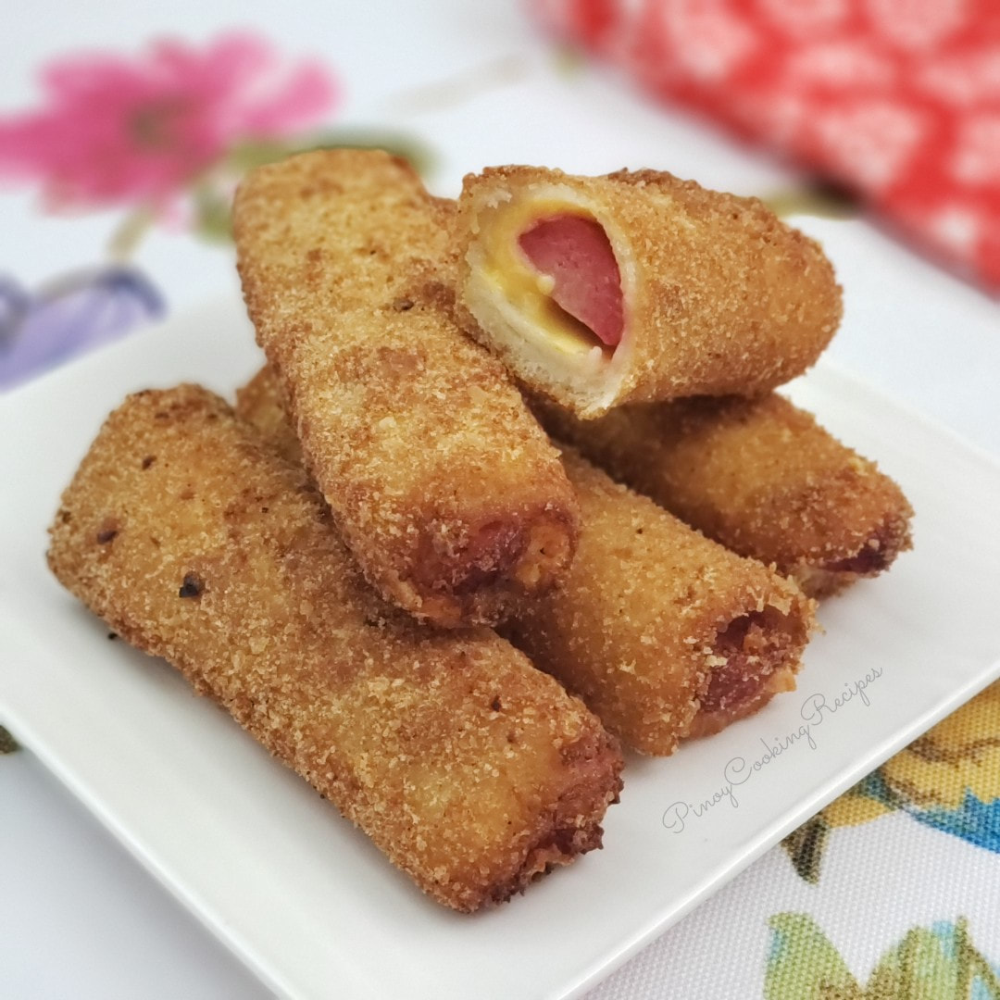
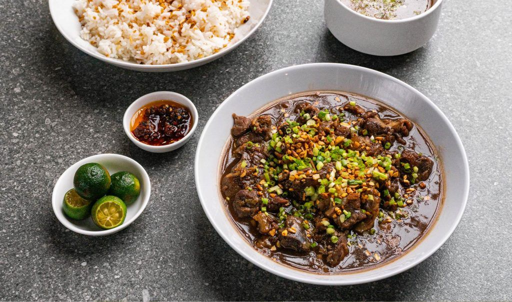
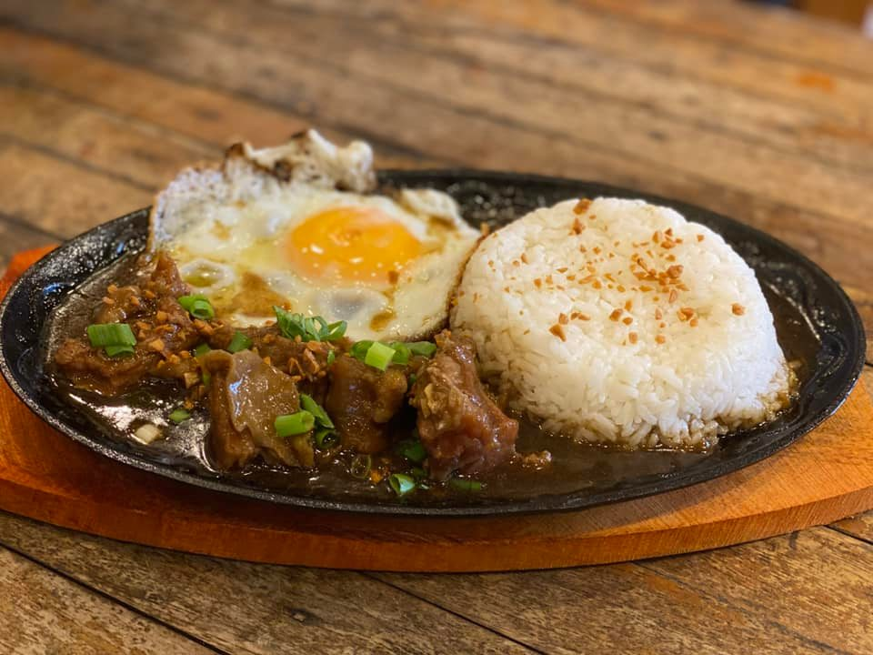

Appetizers
| DISH NAME | EXAMPLE | DESCRIPTION | PRICE |
|---|---|---|---|
| Cheese Sticks |  |
Delicious snack or appetizer the whole family will love! Golden, crunchy, and filled with melty cheese, these spring rolls are seriously addictive! | ₱50.00 (8pcs) |
| Cheese Dog Bread Rolls |  | Cheese Dog Bread Rolls are as fun to make as they are to eat and are the best use of day-old sliced bread. Golden, crunchy, and stuffed with meaty hot dogs and melty cheese, they're a hearty snack or appetizer kids and adults alike will love! | ₱50.00 (5pcs) |
| Southwestern Chicken Egg Rolls | Southwestern Chicken Egg Rolls are the perfect snack or appetizer! Golden, crunchy and stuffed with chicken, vegetables, beans, and cheese, they're a guaranteed crowd pleaser! | ₱100.00 (5pcs) | |
| Pork Siomai |  |
Siomai, with ground pork, shrimp, and shitake mushrooms, are tasty and filling. These steamed dumplings are easy to make and delicious as an appetizer, snack, or main meal! | ₱20.00 (4pcs) |
| Ukoy | Ukoy, made of green papaya and kalabasa, are a delicious snack, appetizer, or side dish. These vegetable fritters are golden, crunchy, and tasty! | ₱20.00 (2pcs) |
MEALS
| DISH NAME | EXAMPLE | DESCRIPTION | PRICE |
|---|---|---|---|
| Regular Pares Combo |  | 1 Beef Pares and 1 Fried Rice. You can pay an extra ₱20.00 for unli fried rice. The aroma of this dish alone is enticing. The taste is captivating. | ₱50.00 |
| Beef Pares Mami |  |
Beef Pares Mami is a simple noodle soup dish. It is a combination of two dishes: beef pares and beef mami. We love to have it during cold weather. | ₱50.00 |
| Sizzling Pares |  | Perfect for people who love sizzling foods because we combined sizzling and juicy soup pairs. | ₱80.00 |
| Pares Overload |  |
It's also like the regular Beef Pares but we added Chicharon Bulaklak and Pork Chop. You don't even need to worry about the rice because it's unli rice. | ₱100.00 |
DESSERTS
| DISH NAME | EXAMPLE | DESCRIPTION | PRICE |
|---|---|---|---|
| Calamansi Cheesecake Bars | Rich, creamy, and full of citrus flavor, these Calamansi cheesecake bars are the ultimate sweet treat! They're perfect as an after-meal dessert or midday snack! | ₱30.00 | |
| Buko Lychee Sorbet | Buko Lychee Sorbet is a delicious frozen treat made with lychees and young coconut. It's easy to make with only four ingredients and a refreshing way to cool off on hot summer days. | ₱50.00 | |
| Ginumis | Beat the heat with this refreshing Filipino-style shaved ice! Ginumis with coconut cream, sweet syrup, sago’t gulaman, and toasted pinipig is a delicious way to cool off on hot Summer days. | ₱50.00 |